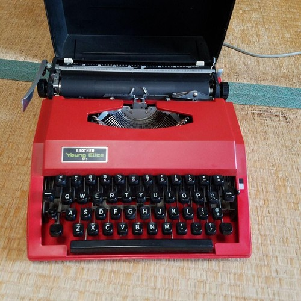

1977 : The First Pivotal Year
At the end of April in 1977, I turned four years old. I think that one of my first memories is of my birthday party. My mom, who I think never had to work for money, did crafts. She apparently put some work into either a "Cowboys and Indians" or pure Native American theme for this party.
I think that my next memory is either the night of the accident in October or a subsequent date, possibly the day that my mother died. My parents had gone to a party, so I assume at least my dad had had too much to drink. My mom was giving the babysitter a ride home when a drunk driver in a van with its lights off T-bioned her tiny economy car. I heard that they found her in a field and the babysitter had a broken leg.
The memory is of my dad telling us three boys. In my mind's picture, he's sitting or nealing near us or on the bottom bunk of a bunk bed with us. Terry built that bed, which stayed in my family for about another decade. Terry was a business partner in carpentry with Carl, who was Andy's dad.
I don't remember any words, just my father's grimness. Supposedly, Adrian apparently didn't understand or didn't believe it and started laughing.
Another story from this period is that the adults asked Tim if he wanted us to go see her in the hospital. This seems like a ridiculous responsibility to put on a child only six years in age. Tim declined, which I believe was probably the right decision. He's always felt guilty about this, but I guess I would rather remember my mother as a perfect angel than basically a mutilated corpse on a hospital bed.
She lived for about nine days, but there was never any chance of survival, which probably wouldn't have been for the best anyway. She died in a helicopter on the way to have her eyes donated to another medical patient.
I remember we wrote notes to mom, tied them to baloons, and release the baloons. I have no idea what I wrote, but I was certain that it would not reach mom. I'm not sure how the adults thought that this would help me get over it. In some way, I knew that childhood itself was over; I was thinking about complex topics that never affected most children my age.
I grew up pretty quickly from this point, realizing that I had to put on appearances for other people, and especially to look strong for my father, who was obviously overhelmed with three children. Adrian was somewhat difficult at this age, and Tim has always been difficult.
I don't know exactly why - maybe because my dad had too much on his hands - but I think we got rid of Tim's dog Beatle. I don't know when, but some time later, we got a mut that looked like it was mostly Collie from some children that had puppies in a cardboard box in front of a grocery store. We named him Duncan.
I have a vague memory of going to court, but I don't remember if I testified. I think my dad won a civil suit, and I seem to remember that my family received about $200,000, which would have been quite a bit of money at the time. It's possible that we didn't receive anything, and other than things like housing, food, and private schooling, I never received anything directly from this. My dad made bad investments and spent almost everything before he eventually passed away.
I don't remember the exact order of events, but around this time, I was in a Monetssori school, which I absolutely loved. I may have been enrolled before the accident, or I may have been enrolled because Anne didn't think I should think too much about what had happened. I was only in this program for a couple of few weeks at most. Supposedly, Anne also thought that it would be best for me to be near her, so my dad moved me to the kindergarden at the grouper school named Great Oak. Anne was the teacher. So I entered kindergarden a year early, the youngest child in the class, a late entry, and the only child without a mother.
Relatively few of the children in the group were much older than me. Those older kids included all of Anne's five children. I think Alex was the father of all five. Anne later "adopted" children from various familiies in the group.
Mine was the largest class in the group, consisting of 26 students. It seemed like there were more birthdays in May than any other month, which always makes me wonder if there had been some kind of group event nine months before May of 1972. I think that by the time Great Oak closed seventh and eight grades, which was after my seventh grade, we were down to 15 students or less, and the school had separated the boys and from the girls. The school honestly closed because the studens were too rebelious.
I don't remember much of kindergarden. I remember a really scary doberman that was chained up near the classroom at the property on Sonoma Mountain. I remember Anne gave me something like a porcelain gardenia on a rock, as this had been my mother's favorite flower. I felt bad when the petals eventually broke and I had to throw it away, but who gives a child something so delicate? I remember that a kid named Toby with very thick glasses bit me for no apparent reason. He came from a somewhat troubled home and ended up being the victim of everyone in my grade.
That year, I had the first sexual experiences that I remember. I think one was with a girl named Amanda whose parents left the group a few years later, but it could have been with the girl named Anne that was supposedly related somehow to the guy that invented scotch tape. I think we met more than once in a cluster of brush in front of the school. I remember putting some twigs in her.
The other one was with a girl named Juliah that who had an older sister named Christa in Tim's grade. I don't remember exactly what happened behind what I believe were some pig enclosures, but nothing too serious. I think I told my dad and he suggested that I probably didn't want to be friends with a girl like that. This may have happened in third grade, when my play spaces were on the same property as kindergarden.
The cult supposedly espoused aspects of Hindu and Buddhist philosophy, but thinking back, I don't remember much of this. What I mostly remember is Anne's personal ego. I honestly don't remember any of it, but it seems like she was always talking about having more awareness, intelligence, or other forms of superiority over all others.
I should mention that the children had to call her Auntie Anne. In fact, we had to call all of the adults Uncle or Aunt or Auntie. One could interpret this as a show of respect for adults, in which there could be some value. One could also interpret it as a sort of class hierarchy, where authority figures had dominion over children, even if their authority was invalid. I would have preferred to call them Mr. or Ms. or Mrs. Last Name.
Anne, who came from England and maintained somewhat of a pretentions accent, was a fan of Winnie the Pooh. Later, I sympathized with the character Eeyore (a stuffed but depressed donkey named after the sound that donkeys make), but otherwise never cared much for the stories. I did like the characters of Piglet, Tigger, and Rabbit in the classic animations. Anne also liked Beatri6x Potter. I think each kid in the group was supposed to be associated with some character somehow Someone (possibly Anne) gave me a copy of The Tale of Johnny Town Mouse. I don't remember relating to the story or the character.
Anne's lectures were certainly a form of punishment. They could last for hours. I think that generally we could sit, but I beleve that sometimes we could stand. They were so incredibly boring that we did things like eat ants off of the nearby trees. I remember that we weren't allowed to play what Tony (Anne's new husband) called "shitsticks", which was anything that involved touching the grass with our hands.
To my knowledge there weren't many forms of punishment other than lecutre. I don't remember what Toby did once, but I think Anne made him stand on his stool in front of the entire class, and he may have had to pull down his pants for some reason, in some kind of attempt to mortify him in front of the class. Memories and stories from this period are rather hazy, but Toby was always a victim of abuse from at least his older brother (who I heard recently died) and his classmates. Later there were a few reports of physical abuse by teachers, because certain children really did rebel and get out of control. I don't think there were any consequences for the teachers. I remember hearing about one kid in a grade below mine getting punched by a teacher that had been a professional boxer. I think it was the same teacher that used a belt on a kid named David in my seventh grade, who I think was really a problem child.
At this time in the mid-1970s, I think it was still pretty normal for basically any adult to have the authority to discipline any child, whether in their family or a stranger. Corporal punishment by at least parents was also still permissible. Most children did not have to refer to most adults using any form of honorary, even Mr. or Mrs. Children generally just avoided referring to adults by name.
Anne had a system for describing people. I think the intent was to describe individuals rather than to classify them into one of the six possible groupings. Basically, each person demonstrates three primary characteristics in variable order: emotional, physical, and intellectual.
Anne described me as emotional-intellectual-physical. I am not sure that I ever understood exactly what she meant by this, but I can apply it as follows, which seems valid. My primary motivator may be my emotions; I can can be overwhelmed with positive or negative feelings that can control my actions. I am strongly interested in intellect, particularly for understanding my emotions and converting them into actions, but I have a tendency to react with emotion rather than logic. I am least intersted in the physical aspects of life including things like exercise and other forms of self-care, although I have certainly sought sex for most of my life, I think due to confusing it with love or seeing it as the primary manifestation of love between a couple.
As I have aged, I have learned to try to be less reactive to my emotions. I try to see feelings as indicators. If I am unhappy with something, instead of reacting, I should try to understand it and then strategize to change it. If I am happy, for one thing I should beware that it might not last, but I should think about what makes me happy and how I can maintain that thing. I have also learned that I need to take better care of myself physically. I've also begun to question the value of certain forms of intelligence, which don't necessarily bring happiness and can even be destructive. Ignorance truly can be bliss.
It may be worth applying this perspective to yourself: which of these elements is most important to you, or most likely to motivate your behavior? Which do you demonstrate most? Which might not get enough of your attention? Is the third mediating between the two somehow? Do you ever confuse any with either of the others?
In school, we celebrated multicutluralism and all faiths. We would have "feast days" where the students would dress up in costumes representing different cultures or religions and we would have meals based on regional and traditional cuisines. While every family in the group was white, I remember a single woman that had adopted a Korean boy. One family had a Korean mother, whose adoptive father Bob had adopted her after the American war in Korea. Bob was responsible for bringing my parents into the cult. He had met my parents after architecting the first house that they bought in Balinas and another house that we lived in after my dad remarried.
I think Anne read The Five Sons of King Pandu to us that year. which is a westernized English translation of the Mahabarata. I don't remember much of the story, but I remember being really impressed with the character of Arjuna, the warrior. I think his relationship with lord Krishna also had some kind of impact on me.
Anyway, I grew up in what I would call an all-white community being taught not to have any prejudices or biases against anyone of any faith or color, and I appreciate that. To my knowledge, I never witnessed any racism, but then again I never really experienced any races other than white except for that one half-Korean kid in my class. We were often told that the world outside the cult was cruel and dangerous, but I didn't understand this until much later.
At the same time, my parents took me to Sunday school at an Episcopalian church, which was also the location of my mother's funeral. I remember something like witch hats standing on the coffin, and this was also the date of my first memory of her mother. Supposedly, he had come brought something like a recreational vehicle to live at my parents' property before she died, but I have no memory of this. What I remember is him driving me to the funeral in a small car that was in very bad shape.
My mom was cremated. My dad kept her ashes in an urn somewhere in the house. I was surprised at how little space they took, although I sometimes doubt whether it was all of her ashes or whether they were really her ashes alone. They weren't exactly ashes; there were also small chunks of bone. It seems wrong, but I think that each of us boys was allowed to keep such a chunk. If that is a real memory, then I have no idea what happened to the chunks. I believe that when he eventually died, her ashes went into my dad's space in his family's mosoleum. That mosoleum also contains my grandfather's ashes and is where various members of my family would likely want to put my ashes as well.
My dad had a landscaping business. Our property was about an acre. In respect for my mom, he created a huge large wooded area in the back yard that he referred to as her mound.
I don't know exactly when, but I had a few accidents in that back yard. One time, my dad's crew cut down a metal pole that held up a laundry drying rack that looked like a huge television antennae, but they left the stub in the ground. Somehow I slid into it with my knee. I think this resulted in a lot of blood. I still have the scar, which seems to thow that the stitches were relatively large. We also played a game where one of us would sit on top of the wooden gate, maybe five feet off the ground, while another would swing it. I think I ended up with a concussion. I have a scar in one eyebrow from when Adrian broke a tennis racket over my head, which required stitches. I also went to the hospital to get stitches over my skull at least once when I fell out of the bunk bed somehow.
Despite the supposed multiculturalism, every year the group would throw a Christmas Party with a Charles Dickens theme. All of the parents would mand different booths serving drinks or games or something. One of the adult men would play Santa Claus and each of us would sit on his lap and receive a gift. I think some years Santa had some notes from our teachers or something, but of course the kids generally only cared about the present. I don't remember any words or significant gifts.
Each grade of the school would perform a Christams play. In my kindergarten class performed [Scrooge: The Musical](https://en.wikipedia.org/wiki/Scrooge_(1970_film). I played one of the steet urchins that satirically mock Ebenezer by singing about him ironically and somewhat sarcastically as Father Christmas. Familiarity with this story from a young age, especially the compassionate and caring Bob Cratchit losing his underpriviledged child in hard economic times due partly to a wealthy miser as well Jacob Marley as the third spirit and its warnings about Scrooge's own death, might actually have had some impact on my life.
I don't remember exactly when - I think some time between kindergarten and third grade - I went with Toby on am RV trip with Toby and his grandparents. This experience really stands out to me, because I think it was the result of me trying to befriend Toby. I remember that it was a good trip.
1978 - 1980: The Nanny Years
Around this time, The Wizard of Oz was my favorite movie. I don't remember how I watched it, because this was before VHS players. Maybe I saw it on TV, and maybe I had a record of the songs, or some other reminder. My dad had a really old copy of the book that I also eventually read, but didn't enjoy as much of the movie.
Star Wars came out in 1997, but I don't think I saw it right away. I think I first saw it in a theater with my dad. More than the event or any other specifics of the movie, I remember being somewhat afraid of Darth Vader. It's starnge to say, but that series - especially the fist two movies - had a significant effect on my childhood.
For the next few years - I don't know exactly when - we had nannies. First was an older grouper woman named Lorena who moved into the mother-in-law unit behind our house with her son Blake, who was at least a year older than Tim. I don't know her story or remember much from this period, but I think she later ran a daycare for older groups named something like Wildwood. She also caught Tim when he jumped because he couldn't climb out of a big tree that was on the property where I attended second grade.
A couple years later, a nanny that I remember better was Kim, who must have been with us for a few years. She had a boyfriend or husband named Roger. I remember that they once took us camping. The only part I really remember is Roger running to the river with toilet paper streaming out of his ass after Kim screamed when Adrian fell into a stream.
I don't remember exactly when, but I remember my dad hitting me at about this age. I don't remember any spankings or other corporal punishment. In this case I must have said something rude without knowing it and he just reacted. Maybe I did intentionally say something inappropriate, but I think more likely he must have misunderstood me and just slapped me across the face in a reactionary manner. I don't think he ever apologized. I was definitely learning to be careful of his emotional states.
I also remember that he couldn't really cook, just as at 52 I really can't cook. I guess the nannies usually cooked. On Sundays, when they didn't work, he would sometimes make sandwhiches with cream cheese and jelly. We also had jelly on whie rice sometimes. I remember some kind of turkey loaf that didn't require much preparation, and also when the cheese Kraft macaroni came as liquid in a can instead of powder as it does now.
I feel that my computing career actually started when I was about five years old, when I somehow acquired a Brother mechanical typewriter. I honestly don't think I could have written as much English or computer code if I hadn't started developing typing skills so early.
If you've never used a mechanical typewriter, some things to consider:
- You have to hit the keys hard enough to cause the letter hammers to hit the paper roller, which is a significant amount of force.
- You can't type too fast or the letter hammers might hit each other and get jammed.
- Correcting errors is somewhere between impractical and impossible, and paper has some cost, so you learn to type with minimal errors.
I have no idea where I got it or what happened to it. I can't easily recognize a picture of it online, but I feel like it might have actually been intended for children. Maybe it was a Young Elite model or a Deluxe 600. I think it had a red pastic case and supported two printed colors using separate red and black vertical strips on the ink ribbon, which unwound from a spool to the empty reel. You had to push a lever or hold a special key down to activate the red part of the ink ribbon. The black ink would generally run out before the red ink, but you could rewind the ribbon.
It looked something like this, but I don't remember whether it had that black cover.

Around this time, I had two experiences that I can't explain. One was around Christmas. I saw a blinking red light outside the bathroom window, although there was nothing there that could have caused it. I attributed it to Rudolph.
In another, I saw the Easter Bunny while I was sleeping in my dad's bed. He was about the height of a human. He looked like and was dressed something like Bugs Bunny. He was cartoonishly bright and colorful, wearing something like a tweed jacket and a straw hat. This might have been my mind's way of preventing me from realizing that my father was the Easter Bunny.
1978 - First Grade
In 1978, I turned five years old and made the transition from kindergaden to first grade. Our classroom was on grouper Pete's property, I think in Cotati or Petaluma. I remember the water being really rusty, smelling and tasting horrible and staining porcelain. My teather was grouper Tarney, who was the father of Sam, who was a boy in Tim's grade (one year ahead of me). I don't remember much about this year, other than that we watched The Red Baloon movie in what I think was a barn near the house in which we had the classroom. I think she was a good teacher for that grade.
1979 - Second Grade
In 1979, I turned six years old and made the transition from first to second grade. School was at grouper Shiah's house, which was on a large property at the top of a hill in Petaluma. One of the greatest things about this property was a huge oak tree that we would climb constantly. The trunk seemed gigantic and was difficult to scale, but that was the only hard part. One thick vertical branch was actually smooth on top, with the bark removed from countless children shimmying up and down. One branch reached a shed, which was a common way down rather than jumping or going back to the trunk. Another branch reached a power line, which the bravest kids would travel hand over hand. I believe there was also a rope swing. Obviously, there were rarely any adults watching us at this time.
Our teacher that year was a grouper named Armond, who was always one of my favorite groupers. I don't know much about his history, but all of his children were older than me, the youngest being Joe in my brother Tim's class. His oldest, a girl named Natasha, had babysat for my family at some point. I later found audio tapes of Motzart's Magic Flute with her hanrdwiting on the labels, which had apparently been a gift to my father, who had taken us children to a performance of that work, I think in San Francisco. His middle child was Dan. Armond had a son named Joe in Tim's class and an older son named Dan.
One of the things that I liked about Armond was that he was smart and scientific. He taught us our multiplication tables up to 12x12. I was the first student to memorize them, likely only minutes before Bry, who honestly was always much smarter than me.
I also read my first full-length novel: The Wednesday Witch by Ruth Chew. I remember enjoying it and having some interest in reading, but I don't remember any of the characters or story. I think I got an idea of the fantasy worlds that reading books could allow.
My family must have had a really good Christmas that year. When I got back to school, I was very sad to be separated from my brothers and my dad. Armond did a great job ouf counseling me through this.
Under Armond's direction, we tried to consruct a fort out of hand-made adobe bricks, but I don't think we ever completed it, likely because it was too much work and unlikely to be safe.
We watched a mobile slaughter company bring a trailer to kill and render a pig on the property. This might have been sixth grade, which was at the same property, but with a different teacher.
I don't remember which year my brothers and I started going to grouper summer camps. They were generally more fun than school, as we mostly played outdoors. We would also collect and sing songs including many that were humorous, some made up by a grouper man named Garren, the father of MacEwen in Tim's grade, who played guitar.
One of the carpool drivers, who was the mother of a girl named Sierra in my class, drove a tan Ford Pinto. In those days, seat belts were not required. Some kids would ride in the back, where there weren't even seats. I think I was back there with Bry one time while he was working on a rhyme for teasing Toby. He had come up with some lines and asked me to fill something in. To fill this in, I suggested the second line of the following with no real meaning or intention to hurt Toby.
Toby-eye-as
Picke-pie-as
Eya-ball-sis
Bites-his-tong
This made fun of Toby for the fact that he wore thick glasses and appeared to bite his tongue when he was angry. Several people in my class used these words to torment Toby for years afterwards. I don't remember using this against him even once, but it's possible, and it's still almost hard to admit that I did this. Children can be very cruel and don't necessarily undersand what they are doing when they are.